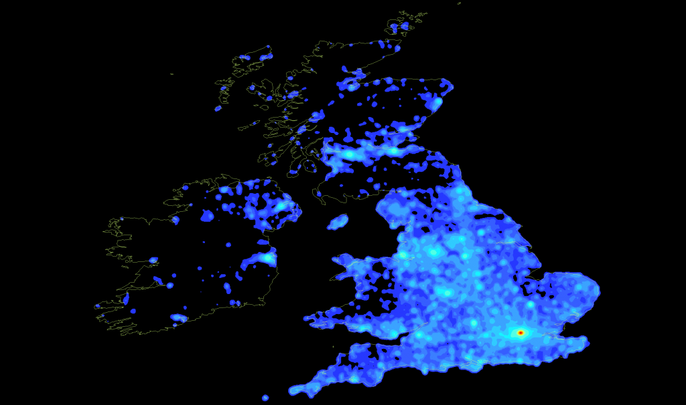
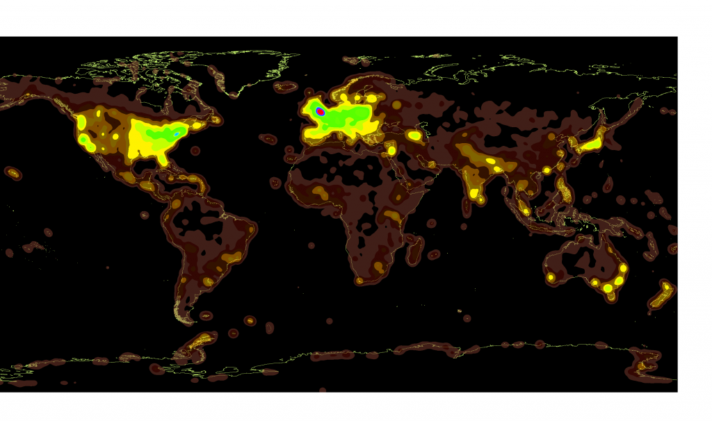
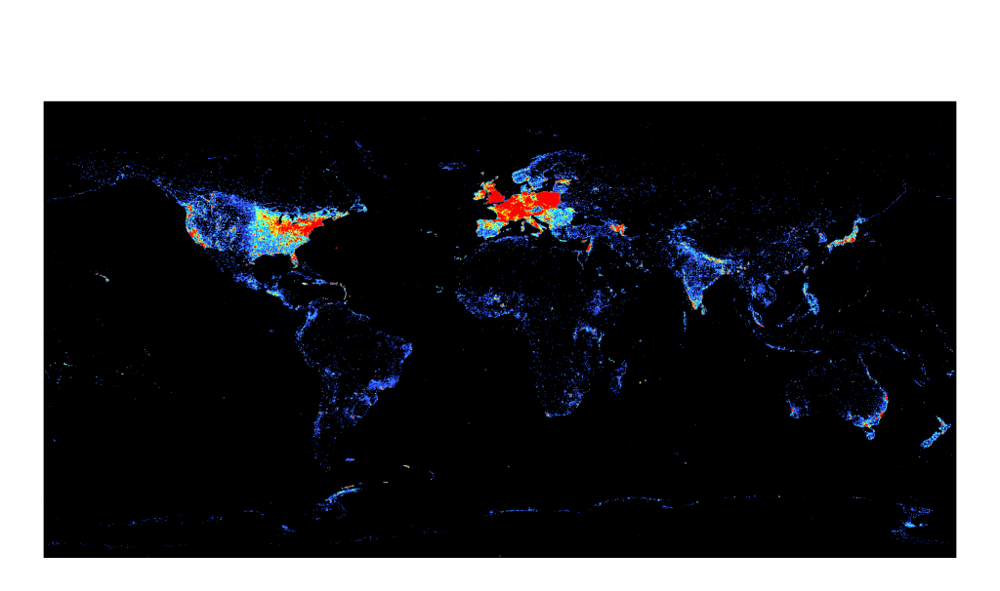

While the United Kingdom is the most dense region from a global scale, on closer examination it would seem that there is a sort of Hadrian's Firewall as far as Wikipedia is concerned.
The mayor of Salt Lake City recently took issue with his city being described as significantly smaller and less connected than London. There are many ways to gauge importance from a social and cultural sense, such as calculating the centrality of the Salt Lake City Airport in a network made up of world airports, or measuring the number and type of notable individuals a city produces. We struggle with just such a question of metrics all the time in the digital humanities, and so I’ve experimented with several more off-the-wall measures. One that I think provides a sense of cultural density, especially in the English-speaking world, is a measure of the quantity of Wikipedia articles associated with a place. It’s very rough, and meant to be one of the ever-useful “gestures” at meaning that are used in the humanities (while the sciences have perfected the proxy, the gesture is truly the most valuable humanities commodity). A while back, I mapped Wikipedia, or at least the geolocated articles that were easily available via DBPedia. While it’s not perfectly accurate, it does give something more than just population density. From this measurement, at least, it does seem to support the argument that London is slightly more central in the consciousness of the world from a social, historical, and cultural perspective.
Here are a pair of article density maps of Wikipedia from a worldwide-scale. The same data is being shown, just with different coloration. The London region is in a completely different category than the rest of the world.


The world of Wikipedia, with brighter areas having a higher density of geolocated articles.


DBpedia Article Density Worldwide
And here is a close-up of London Wikipedia article density, overlaid on a lovely 19th century map of the city, showing the densest regions within the city proper. The place where Sir Walter Raleigh’s head divorces his body seems to be of particular prominence:

Unfortunately, I never made a map of Salt Lake City. But I made several maps of several other US cities, such as San Francisco and New York. Perhaps these will serve as selling points for their hosting of a future Olympics: